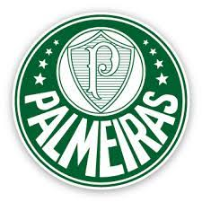

Sociedade Esportiva Palmeiras (pronúncia em português: [sosiedˈ adʒi ispoɾtʃˈ ivə pawmˈ ejɾəs],[3] conhecida popularmente como Palmeiras) é um clube poliesportivo brasileiro da cidade de São Paulo, capital do estado homônimo. Foi fundado em 26 de agosto de 1914 e suas cores, presentes no escudo e bandeira oficial, são o verde e branco.[4] O vermelho, presente desde sua fundação em 1914, foi excluído durante a Segunda Guerra Mundial, por pressão do governo nacional, na mesma reunião que formalizou a mudança de nome de Palestra Itália para Palmeiras.[5